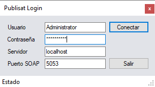

Pensado para emisoras con Dinesat o HDX, permite administrar tandas comerciales con una interfaz similar.
Funciones
- Editor externo configurable
- Agregar materiales a múltiples tandas
- Modificación masiva de contratos
- Lista de apariciones
- Importación/Exportación TXT, CSV, XML
- Guardado automático
- Duración por tanda
- Bloques por horario
- Búsqueda avanzada
NUEVO
Gestión de Clientes:
- Fechas de contrato
- Días, horarios y rubros
- Inserción automática inteligente
Login

Ejemplo de uso

Disponible para audio, video y noticias.
Prueba gratuita por 30 días.